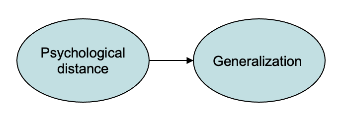
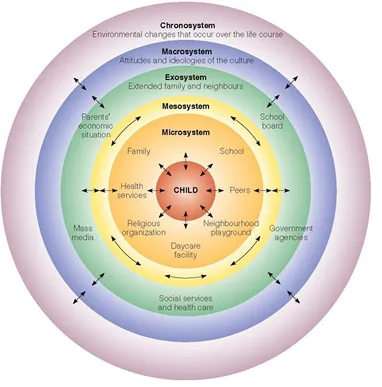

Chapter 2 Theories
🍎 Learning goals
- Explore the role of theory in synthesizing observations
- Contrast different philosophical views on scientific theories
- Analyze features of an experiment that can lead to weaker or stronger tests of theory
When you do an experiment, sometimes you just want to see what happens, like a kid knocking down a tower. And sometimes you want to know the answer to a specific applied question, like “will giving a midterm vs. weekly quizzes lead students in a class to perform better on the final.” But more often, our goal is to create theories that help us explain and predict new observations.
But what is a theory? For our purposes, we’ll define theories as contentful hypotheses about causal structures and how they relate to observed effects. We distinguish these theories from frameworks – broad sets of ideas that guide research but don’t make specific contact with particular empirical observations.
We begin this chapter by talking about the specific enterprise of constructing psychological theories. We’ll then move to discussing how theories make contact with experiments. Philosophers of science have discussed this issue extensively and we’ll give you a very brief tour of the landscape.14 Some of the key issues in topics like replication (Chapter 3) and inference (Chapter 6) make use of this material. We’ll also discuss the role of formalized, quantitative models in psychological theorizing. Finally, we’ll end by discussing what features an experiment will to contribute to theory, our last topic. But, as we’ll do in most chapters in the book, we’ll begin with a concrete example.
🔬 Case study: Generalization and similarity
How do you take what you know and apply it to a new situation? One answer is that you use the same answer that has worked in similar situations – but to do this kind of extrapolation, you need a notion of similarity. Early learning theorists were obsessed with these issues of similarity and generalization because their view was that organisms (humans being no exception) learned conditioned associations with specific stimuli and then generalized from these associations to determine their response to new situations. So an animal conditioned to salivate to a tone of a particular frequency might salivate slightly less to a tone that was close in pitch, and salivate substantially less or not at all to a tone that was further away.
Roger Shepard worked for much of his career on understanding this problem of similarity and generalization, culminating in what he called the “universal law of generalization,” which allowed generalizations to be derived in a wide range of stimulus spaces (Shepard, 1987). The first step in this process was establishing a stimulus space. For a stimulus domain like size, color, or even speech sounds, he used a procedure called “multidimensional scaling” to infer how stimulus items could be placed in a low-dimensional (often 2D) Cartesian space. Then, when he visualized generalization gradients within this space, he found the incredibly consistent pattern shown in Figure 2.1. Working backwards from this pattern, he was able to establish a derivation for this exponential generalization gradient that allowed him to claim it as a universal law.
Figure 2.1: Figure 1 from Shepard (1987). Generalization gradients for twelve diffent kinds of stimuli.

The pattern shown in Shepard’s work is an example of inductive theory building. In the vocabulary we’re developing, Shepard ran (or obtained the data from) randomized experiments in which the manipulation was stimulus dimension (e.g., circle size) and the measure was an explicit similarity judgment (e.g., how similar is this circle to that one). Then the theory that Shepard proposes links three constructs – latent entities whose relationships the theory specifies. In particular, 1) similarity is used to derive 2) an internal psychological space, and 3) generalizations are then derived from distance in this space.
Shepard wrote in the conclusion of his 1987 paper, “Possibly, behind the diverse behaviors of humans and animals, as behind the various motions of planets and stars, we may discern the operation of universal laws.” While Shepard’s dream is an ambitious one, it defines one potential ideal for psychological theorizing. In our discussion below, we’ll look at the broader goals of theory building and how theories can be evaluated.
2.1 Psychological theories
A psychological theory is a set of proposed causal relationships among variables. For the most part, the variables we theorize about are unseen (latent) entities that we call constructs. Constructs can range widely in specificity. g (general intelligence) is the classic psychological example of a broad construct. In contrast, the psychological distance metric that Shepard used in our case study above is a rather more specific example.15 A tradition of research in cognitive science posits that human knowledge is organized into theories (Gopnik & Wellman, 1994), and that in particular we organize our knowledge about other people into an intuitive theory of psychology. This intuitive theory includes concepts like “belief,” “desire,” and “emotion,” but it’s important to distinguish the constructs we posit in psychological theories from the terms in our intuitive theories. Often one is grounded in the other, but the failure to distinguish the two can lead to sloppy reasoning. Theories then are groups of assumptions about the relationships between these constructs.
Occasionally, defining a construct is enough to describe a theory. Defining general intelligence as g, the shared variance between different tests of intelligence, is itself a theoretically-loaded move. But more frequently the constructs gain their meaning in part via their relationship to other constructs. For example, in Shepard’s theory, while generalization and distance were the two key constructs, the substantive part of the theory was the quantitative links between the two that he posited.
 Figure 2.2: A causal model (“nomological network”) for Shepard’s universal law.
This web of constructs and assumptions is what Cronbach & Meehl (1955) referred to as a nomological network – a set of proposals about how different entities are connected to one another. This idea is illustrated by the philosopher of science Hempel (1952), who wrote that:
A scientific theory might… be likened to a complex spatial network: Its terms are represented by the knots, while the threads connecting the latter correspond, in part, to the definitions and, in part to the fundamental and derivative hypotheses included in the theory. The whole system floats, as it were, above the plane of observation and is anchored to it by rules of interpretation.These might be viewed as strings which are not part of the network but link certain points of the latter with specific places in the plane of observation. By virtue of those interpretive connections, the network can function as a scientific theory: From certain observational data, we may ascend, via an interpretive string, to some point in the theoretical network, thence proceed, via definitions and hypotheses, to other points, from which another interpretive string permits a descent to the plane of observation. (p. 36)
One way to sketch this kind of network would be to use the kind of causal graph we used above. So then a nomological network looks like a causal model linking a set of constructs. Shepard’s proposal about generalization could be drawn this way (Figure 2.2), but notice that the arrow connecting distance and generalization is doing a lot of work! Shepard’s proposal wasn’t just that there was some causal link between these two constructs, but that this relationship had a very specific parametric form.16 Calling the theory a “network” sounds like it’s a structural equation model (SEM) where there are circles and lines and the lines represent something akin to the correlations between the numbers in the circles. That’s one way to define a psychological theory, but it’s certainly not the only way! Structural equation models are also primarily designed for observational data, they don’t encode causal hypotheses the way we’ve been talking about them.
Having such a theory allows you to explain and predict; both of these are good things for a theory to do. A theory provides a compression of potentially complex data into a smaller set of general factors whose interactions produce the observed data. Thus, a theory is doing its job if it allows you to say things like “factor A was responsible for effect B.” Shepard’s theory fulfills both of these criteria. It’s explanatory in the sense that it allows you to answer questions like “why is generalization so much lower for shapes that are a bit further apart in psychological space” or broader questions like “why does psychological generalization have an exponential form.” And it’s also predictive in that it suggests the (quantitative) consequence for generalization judgments that should result from a particular manipulation of distance.
2.2 Theory testing: Popper, Kuhn, and Lakatos, oh my!
We have said that experiments allow the estimation of causal effects and theories describe causal relationships. How do theories make contact with evidence? Perhaps unsurprisingly, there is no consensus around this topic in the philosophy of science. Yet there are viewpoints on theory construction and testing that have emerged that are very useful for the working scientist to know about. We’ll introduce one normative view of what theories are (and how they should be evaluated) that resonates with many scientists: Popper’s falsificationism. We’ll then discuss three critiques of this viewpoint: 1) the descriptive challenge posed by Kuhn (1962), 2) the challenge of holism, and 3) questions about confirmation that come from modern Bayesian views.17 This is nowhere near a comprehensive introduction to this huge topic. Instead, we’re just picking and choosing a couple of topics that help set up discussions we’ll be having throughout the rest of the book. For a very readable introduction to the broader field, we recommend Godfrey-Smith (2009).
For Popper, a scientific theory is a set of generalizations about the world. These generalizations embody substantive hypotheses (like “lyrically dense music decreases writing ability”). What makes such a statement a scientific hypothesis is that it is falsifiable, for example by an observation that contradicts it (someone not experiencing such a decrease despite listening to Dylan). On this view, theories are never confirmed – they are posited and then at best can fail to be falsified for many years, despite repeated attempts to do so.
Popper’s viewpoint is appealing. The logic of falsificationism resonates with many scientists, who view themselves as trying to make correct generalizations with increasing scope and then to subject these to increasingly stringent tests. On the other hand, it has a number of serious weaknesses that mean that it’s not a great tool with which to analyze scientific practices (which is something we’d like to do here). Ideally our philosophy of science should give us a sense of what we are doing when we attempt to construct theories and do experiments.
The descriptive challenge. A highly influential critique of Popper (and other related viewpoints that treat scientific progress as making logical generalizations) comes from the sociological and historical work of Kuhn (1962). Kuhn studied scientific revolutions and suggested that they looked nothing like the falsification of a clear generalization via an incontrovertible observation. Instead, Kuhn described scientists as mostly working within paradigms. These paradigms are sets of questions, assumptions, methods, phenomena, and explanatory hypotheses that together allow for activities Kuhn described as normal science – that is, testing questions within the paradigm, explaining new observations or modifying theory to fit these paradigms.
On Kuhn’s view, normal science is punctuated by periods of crisis and and revolution when the working assumptions of the paradigm break down. This doesn’t happen just because a single observation is inconsistent with the current set of assumptions (as falsification would suggest). Rather, there will often be a transition to a new paradigm that typically involves a striking success (such as the transition to a heliocentric viewpoint in astronomy).
For Popper, subsequent theories necessarily contain better generalizations and have greater scope. For Kuhn, that’s not necessarily true. Paradigms are incommensurable with one another. The new paradigm doesn’t necessarily explain all the same things the old one did (or test its hypotheses via the same measures). This is often very disconcerting for scientists because they like the feeling that they are moving towards ever greater truth.
On the other hand, in psychology, there are clear examples of paradigm shifts where the new paradigm does not subsume the old one. For example, behaviorist psychology produced a series of reliable generalizations about particular phenomena in animal learning (e.g., operant conditioning). The cognitive revolution that followed led to a transition in research topics, experimental methods, and theories, but the cognitivist theories did not typically provide an alternative account of conditioning behaviors. The sense in which behaviorism was overturned was that its scope was narrowed and fewer researchers focused on it as an account of other phenomena in language and mind.
The example of behaviorism is probably a relatively rare example of a true Kuhnian paradigm in psychology.18 If you are interested in a perspective on this paradigm shift, here’s a relevant essay. Mostly we aren’t thinking of the entire discipline changing at once. To deal with this more incremental change, Lakatos (1976) defines the notion of research programs that are more like little paradigms that can run in parallel with one another. A research program is a set of hypotheses, phenomena, and methods that all cohere together and allow for progress in their explanatory and predictive scope. Psychology – even experimental psychology – to us looks more like it has a series of interconnected research programs than one big paradigm. When one research program seems like it’s not going anywhere, researchers are free to jump ship to another more promising one.
The challenge of holism. A second point that makes Popper’s falsificationism a bad match for working scientists is the observation that no individual hypothesis can be falsified independently. Instead, the reasoning about whether a hypothesis relies on a large series of what are called auxiliary hypotheses that are necessary to link the observation to the theory. To take our running example, if we found no decrement in writing skill in one of our planned experiments, that observation might still not falsify the Dylan Hypothesis. Instead, the fault might be in any one of our auxiliary assumptions, like our measurement of writing skill, or our choice of Dylan songs. One major source of auxiliary hypotheses in psychology is the process of making variables like “writing skill” or “listening to lyrically-dense music” into concrete statements that make contact with the world.
The consequence of holism for psychology research is that we often must reason about our experimental observations through the lens of these auxiliary hypotheses. An unexpected observation may cause us to give up on our main hypothesis – but it will often cause us to question our auxiliary assumptions instead (or as well). The work of developing good measures that we discuss in Chapter 8 is tightly related. Selecting or creating a good measure is basically the same thing as considering the auxiliary assumption that your measure is a good stand-in for a quantity like writing skill.
Bayesian confirmation. The final issue to raise with falsificationism is that on this view, theories are never confirmed, but rather only falsified. This idea is at odds with much of the intuitive way that scientists feel that they work. We often describe what we do as deriving a prediction from a theory, testing that prediction, and then feeling that our theory has gained credibility from the observations that are consistent with it. A falsificationist says that this sensation is an illusion and in fact the theory is simply surviving to be tested another day.
An alternative perspective comes from the Bayesian tradition that we’ll learn more about in Chapters 5 and 6. In a nutshell, Bayesians consider the idea that our subjective belief in a particular hypothesis can be captured by a probability, and that our scientific reasoning can then be described by a process of normative probabilistic reasoning (Strevens, 2006). The Bayesian scientist distributes probability across a wide range of alternative hypotheses; observations that are more consistent with a hypothesis increase its probability (Sprenger & Hartmann, 2019). This view is both intuitively plausible and empirically a nice match to people’s reasoning, as shown by research building on Shepard’s (Tenenbaum & Griffiths, 2001)!
In sum, there’s no one view on the processes of theory testing and revision. If we think of a theory as a posited set of causal relationships, then it’s clear that we can’t just put this theory in direct contact with evidence. We need to think about its scope of application (in terms of the phenomena and measures its meant to have scope over), as well as the auxiliary hypotheses that link it to specific observations and the alternative theories that we are comparing it to.
2.3 Models and theories
Say we have a set of constructs whose relationship we are interested in. How do we describe this relationship? There is no one single vocabulary for psychological theories. Some relationships are stated qualitatively via verbal theories while others are stated quantitatively in formal theories.
Much of the psychology literature from Freud onward consists of verbal theories, including our Dylan Hypothesis. We could even elaborate this hypothesis into Dylan Theory, with some hypothesized mechanism such as “verbal processing resources” that might be exhausted by both listening and writing at the same time. The strength of verbal theories is that they can be expressed and communicated easily. But typically their predictions are at best qualitative in nature. In our discussion of the Dylan Hypothesis, we just expected writing skill to go down while listening, and so we would have accepted any decrement as evidence confirming our hypothesis.
It’s very hard to make a strong test of a theory that makes only qualitative predictions (Meehl, 1990). For example, if we fail to see a decrement in writing skill while listening to Dylan, we can typically call on one of our auxiliary assumptions to salvage the issue. Because we have no quantitative expectations about how big a difference our auxiliary variables should make, it’s quite plausible they could erase or even reverse our effect. Language is also vague and context sensitive (Grice, 1975). While these are arguably positive features from a communication perspective, they can lead to disagreements about the interpretation of a theory unless substantial care is taken in its expression.
The answer to these issues is to theorize using a framework such as a logical, mathematical, or statistical formalism. From a philosophical perspective, it’s perhaps surprising that mathematics is so “unreasonably effective” as a vocabulary for the science (Wigner, 1990). But some sort of formalism is necessary for a theory to make quantitative predictions. Indeed, there have been calls for greater formalization of theory in psychology for at least the last 50 years (Harris, 1976).19 Due to the recent suggestion that we are in a “theory crisis” (e.g., that psychology lacks theory; cf. Chapter 3), recently there have been a spate of articles advocating for the development of formal theories throughout psychology (Oberauer & Lewandowsky, 2019; Paul E. Smaldino, 2020).
There is no one framework that will be right for theorizing across all areas of psychology. Mathematical theories like Shepard’s have long been one tool that allows for precise and parametric statement of particular relationships. Yet stating such clear and general laws feels out of reach in many cases. If we had more Shepard-style theorists or theories, perhaps we’d be in a better place. Or perhaps such “universal laws” are simply out of reach for most of human behavior.
An alternative approach creates and fits models of data that incorporate substantive assumptions about the structure of the data. The structural equation models we referred to above are one example of this approach, where linear regression – in combination with some assumptions about which measurement is related to what – is used to infer the strength of relationships.
Models that start from data are what we use all the time for data analysis. The trouble is, we often don’t interpret them as having substantive assumptions about the structure of the data, even when they do! For example, the choice of a linear regression implies a number of assumptions about how measurements are distributed and how they relate to your manipulation. For example, we could fit a simple regression model to our Dylan Hypothesis data, predicting writing skill as a function of condition. This model would yield a coefficient estimate estimating the effect of Dylan on writing skill. If we were drawing our theory, we could then put that estimate on the line between the two constructs.
This simple example raises all kinds of questions. What are the units of the relationship we’re describing? How do we generalize this theory to other music beyond the Dylan album we used? How specific is our estimate to the writing task we used? Should we expect this estimate to hold for other populations. From our viewpoint, these sorts of questions are not distractions – they are the critical work of moving from experiment to theory! If we declared success via observing \(p<.05\) and moved on, we would not have avoided these questions but rather just ignored them.
Linear models in particular are ubiquitous in the social sciences because they are convenient to fit, but as theoretical models they are deeply impoverished. There is a lot you can do with a linear regression, but in the end, most interesting processes are not linear combinations of factors! In Chapter 7 we try to draw out this idea further, reconstruing common statistical tests as models that can be repurposed to express contentful scientific hypotheses while recognizing the limitations of their assumptions.
One of the strengths of modern cognitive science is that it provides a very rich set of tools for expressing more complex models. For example, the modern Bayesian cognitive modeling tradition grew out of work like Shepard’s; in these models, a system of equations defines a probability distribution that can be used to estimate parameters, predict new data, or make other inferences (N. D. Goodman et al., 2016). And neural network models – which are now fueling innovations in artificial intelligence – have a long history of being used as substantive models of human psychology (Elman et al., 1996).
Computational or formal artifacts are not themselves psychological theories, but all of them can be used to create psychological theories via the mapping of constructs onto entities in the model and the use of the principles of the formalism to instantiate psychological hypotheses or assumptions. This book won’t go into more details about routes to building computational theories, but if you are interested, we encourage you to explore these frameworks as a way to deepen your theoretical contributions and to sharpen your experimental choices.
2.4 Theory testing in psychology
Say we have a theory like Shepard’s universal law (or the Dylan Hypothesis). How should we go about putting it in contact with data? If we wanted to follow Popper’s falsification strategy, we should simply go ahead and start deriving predictions from the theory, then checking to see if it is falsified. But without further guidance, this strategy might be pretty boring. In the classic example that’s used in the philosophy literature, this is like going around checking each and every swan to see if all swans are white, just hoping to find a black swan to falsify your generalization. Maybe we don’t know how to do better with swans but we do with scientific observations.
The key insight of theory testing is that you should look for observations that are likely for your theory but unlikely for other theories. Meehl (1978) calls these “risky tests”: gambles where the theory could be wrong.20 Even if you’re not a falsificationist like Popper, you can still think it’s useful to try and falsify theories! Although holism is an important challenge, and so often a single observation is not perfectly probative, it’s still a great research strategy to look for those observations that are most inconsistent with a particular theory. There are four major ingredients of an informative test of theories: the precision of the measurement, the precision of the theoretical prediction, the flexibility of the theory, and the availability of other theoretical alternatives.
These components together are not always discussed as thoroughly as they should be in psychological theories!21 Much of Meehl’s writing is about the failures of theory testing in what he called “soft psychology.” It’s worth reading his litany of problems (Meehl, 1990), if only to understand what the hurdles are! But you can see them all on display in the this schematic justification for an experiment: “We made a precise measurement of behavior in condition P because theory A predicts a specific result X in this condition, whereas theory B predicts Y.” Let’s discuss each of these pieces.
First, if the experimental measurement is not precise, then it could be consistent with any number of results. Precision of measurement is a prerequisite for theory testing – so much so that this type of precision is a major focus of the rest of the book! Many psychology experiments are designed merely to provide directional evidence and to “reject the null hypothesis” of no difference. This kind of evidence is often consistent with many different theories.
Second, for a test to be “risky” for a theory, the theory needs to have a precise prediction that could be wrong. To take an example from Meehl, if your theory predicts that it’s going to be rainy in April, seeing confirmation of that prediction is not very surprising or informative. The theory hasn’t specified how rainy it should be, so it will be easy to claim many different observations are consistent. Only the most extreme dry weather will appear truly inconsistent. On the other hand, it would be very impressive to see confirmation of a theory that specified which days in April it was going to rain and how much rain fell on each of them.
 Figure 2.3: A roulette wheel.
Figure 2.3: A roulette wheel.
One way to think about theories is that they allow us to make bets. If we bet on a spin of the roulette wheel that it will show us red as opposed to black, we have almost a 50% chance of winning the bet. Winning such a bet is not impressive. But if we call a particular number, say 34, and win this bet, that is certainly riskier because we have a much smaller chance of being right.
Consider our running examples. The Dylan Hypothesis makes – at best – directional predictions about what should happen in a Dylan interference experiment. Seeing such predictions confirmed is not all that surprising, and hence winning this bet is not likely to be that impressive. On the other hand, Shepard’s universal law makes much more specific predictions. Because it states the functional form of the generalization curve, all of the measurements that deviate from that curve more than their measurement error will be inconsistent. Much riskier, and hence much more impressive.
The third ingredient to the risky test idea is that the theory must not be so flexible as to be able to “predict” any data. This issue comes up most commonly when theories are used to “post-dict” data – that is, to explain them after the fact. It would obviously be ridiculous to say after the fact that those 14 days were precisely the days we thought it would rain in April. That’s one reason why we think of preregistrations as a type of bet, where you write down what you think will happen – perhaps according to your theory – before you conduct the experiment!
Verbal theories that do not have any formal or computational representation are at risk for this kind of flexibility. Especially when a theory predicts that multiple factors interact with one another, it’s easy to say that one or the other was “dominant” in a particular situation. But the same issue can come up in computational theories as well. When a theory has many free parameters – numerical choices that change its predictions and that can be fit to a particular dataset – then it can often predict a wide range of possible datasets. This kind of flexibility reduces the risk of any particular experimental test, because the theorist can always say after the fact that the parameters were wrong but not the theory itself (Roberts & Pashler, 2000)!
The final ingredient of an informative experimental test of a theory is that there are other theories that do not predict the same thing! Imagine that we observe an effect of Dylan interference on writing quality. Before we declare victory for the Dylan hypothesis and start building our broader Dylan theory, we need to ask whether there are other hypotheses that also predict the same effects. For example, we might wonder whether models of phonological working memory would also predict inference (e.g., Baddeley & Hitch, 1974)!
Going back to the idea of a Bayesian view of confirmation, the experiment that teaches us the most is going to be the one where the data are high probability according to one theory and low probability according to all others. We can use this idea try to figure out what the right experiment is by considering which specific experimental conditions derive differences between theories. In fact, this idea has a long history in statistics (Lindley, 1956) and now goes by the name optimal experiment design (Myung et al., 2013; Ouyang et al., 2018). The idea is, if you have two or more quantitative models, you can evaluate their predictions across a lot of conditions and pick the most informative one. If your theories aren’t as well-developed, this kind of formal analysis may not be possible, but the principle still holds.
In sum, experiments are not design equal with respect to comparing theories. We should look for experiments that are “risky” and informative tests of theories – precise measurements of cases where theories make strong predictions that contrast with one another.
2.5 Theories, frameworks, and paradigms
You may be thinking at this point in the chapter, “psychology is full of theories but they don’t look that much like the ones you’re talking about!” Very few of the theories that bear that label in psychology are describe causal relationships linking explicitly defined constructs.
Here’s an example. Bronfenbrenner (1992)’s ecological systems theory is pictured in Figure 2.4. The key thesis of this theory is that children’s development occurs in a set of nested contexts that each affect one another and in turn affect the child. This theory has been immensely influential. Yet if it’s read as a causal theory, it’s almost meaningless: everything connects to everything, across all levels of description – very hard to figure out what kind of risky predictions it makes!
 Figure 2.4: Bronfenbrenner’s ecological systems theory. (From SimplyPsychology.org).
Our solution is simply to say that this kind of thing gets called a theory all the time. But it is not really a theory in the sense that we are talking about – or the sense that many scientists and philosophers of science think about when they talk about how theories are testable groups of assumptions that allow specific predictions about future observations.
That doesn’t mean that such ideas are valueless! Far from it. Ideas like Bronfenbrenner’s have inspired huge amounts of interesting research. They can also make a big difference to practice. Bronfenbrenner’s ideas have shifted practice as well – for example by supporting a more ecological model in social work (Ungar, 2002). We think of these ideas as frameworks (or perhaps paradigms, using some part of the Kuhnian sense of the word). They inspire theory without being theories themselves.
2.6 Theories: Chapter summary
In this chapter, we defined an experiment as a combination of a manipulation and a measure. This combination, along with randomization, licenses strong causal inferences about the structure of the world. Because they provide strong evidence on causality, experiments have a privileged position in building theories, although there are many other sources of information that can help us along the way!
We’ve presented theories here as static entities that are presented, tested, confirmed, and falsified. That’s a simplification that doesn’t take into account the ways that theories – especially with formal models as their instantiation – can be flexibly adjusted to accommodate new data (Navarro, 2019). Lakatos’s idea of research programs, which we referenced above, incorporates this flexibility. The idea is that the research program – as a combination of core principles, auxiliary assumptions, and supporting empirical assumptions – is constantly and slowly shifting. Then a productive research program is one where the core principles are being adjusted to describe a larger base of observations. This idea sounds right to us: in our experience, the best theories are always being enlarged and refined in response to new data.
Exercise 2.1 Identify an influential theory in your field or sub-field. Can you draw the “nomological network” for it? What are the key constructs and how are the measured? Are the links between constructs well-specified? Or does this description of a theory not fit?